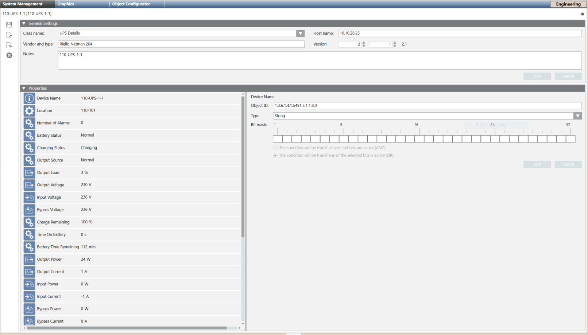

Riello UPS Properties Configuration
The following table lists the Riello UPS properties and the relevant object identifier and type required to properly configure a Riello UPS device manually.
Property | Object ID | Type |
Device Name | 1.3.6.1.4.1.5491.5.1.1.8.0 | String |
Location | 1.3.6.1.2.1.1.6.0 | String |
Number of Alarms | 1.3.6.1.4.1.5491.10.1.6.1.0 | Uint |
Battery Status | 1.3.6.1.4.1.5491.10.1.2.1.0 | Int |
Charging Status | 1.3.6.1.4.1.5491.10.1.2.12.0 | Int |
Output Source | 1.3.6.1.4.1.5491.10.1.4.1.0 | Int |
Output Load | 1.3.6.1.4.1.5491.10.1.4.4.1.5.1 | Int |
Output Voltage | 1.3.6.1.4.1.5491.10.1.4.4.1.2.1 | Int |
Input Voltage | 1.3.6.1.4.1.5491.10.1.3.3.1.3.1 | Int |
Bypass Voltage | 1.3.6.1.4.1.5491.10.1.5.3.1.2.1 | Int |
Charge Remaining | 1.3.6.1.4.1.5491.10.1.2.4.0 | Int |
Time on Battery | 1.3.6.1.4.1.5491.10.1.2.2.0 | Int |
Battery Time Remaining | 1.3.6.1.4.1.5491.10.1.2.3.0 | Int |
Output Power | 1.3.6.1.4.1.5491.10.1.4.4.1.4.1 | Int |
Output Current | 1.3.6.1.4.1.5491.10.1.4.4.1.3.1 | Int |
Input Power | 1.3.6.1.2.1.33.1.3.3.1.5.1 | Int |
Input Current | 1.3.6.1.2.1.33.1.3.3.1.4.1 | Int |
Bypass Power | 1.3.6.1.4.1.5491.10.1.5.3.1.4.1 | Int |
Bypass Current | 1.3.6.1.4.1.5491.10.1.5.3.1.3.1 | Int |
Temperature | 1.3.6.1.4.1.5491.10.1.10.1.0 | Int |
Test Result | 1.3.6.1.4.1.5491.10.1.7.4.0 | Int |
Battery Capacity | 1.3.6.1.4.1.5491.10.1.1.12.0 | Int |
Nominal Power | 1.3.6.1.4.1.5491.10.1.1.10.0 | Int |
Manufacturer | 1.3.6.1.4.1.5491.10.1.1.1.0 | String |
Type | 1.3.6.1.4.1.5491.10.1.1.8.0 | Int |
Model | 1.3.6.1.4.1.5491.10.1.1.2.0 | String |
SW Version | 1.3.6.1.4.1.5491.10.1.1.3.0 | String |
Served Devices | 1.3.6.1.2.1.1.4.0 | String |
Notes | 1.3.6.1.2.1.1.5.0 | String |

Related Topics
In SNMP, see: